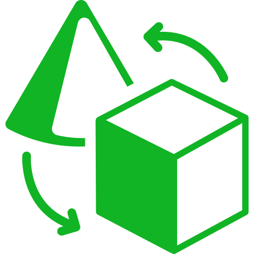

BUTUS : Donnez une Seconde Vie à Vos Objets !
Le monde croule sous les objets. Téléphones oubliés, meubles usés, vêtements stockés... Nous avons tous chez nous des objets qu'on n'utilise plus, mais qui pourraient faire le bonheur de quelqu'un d'autre. BUTUS est une solution simple et pragmatique pour faciliter la revente, la récupération ou le recyclage de ces objets dans une logique locale, éthique et accessible à tous.
BUTUS est né d'une question simple : Pourquoi jeter ce qui peut encore servir ? Cette interrogation a donné naissance à un projet ambitieux qui dépasse le cadre d'une simple plateforme de vente. Nous sommes un mouvement, un pont entre ceux qui veulent se débarrasser d'objets et ceux qui leur donneront une nouvelle utilité.
Notre démarche s'inscrit parfaitement dans les Objectifs de Développement Durable (ODD), notamment l'ODD 12 pour une consommation responsable, l'ODD 11 pour des communautés durables et l'ODD 13 pour la lutte contre le changement climatique.
Change ce que tu ne veux plus, en revenu. BUTUS transforme vos objets inutilisés en opportunités économiques tout en préservant notre environnement.
En facilitant le réemploi des objets, BUTUS contribue activement à la réduction des déchets, participe à une consommation plus responsable, offre des revenus supplémentaires à ceux qui vendent et crée des liens précieux entre citoyens, artisans et recycleurs.
Nos Services : Une Approche Complète du Réemploi
BUTUS propose deux services principaux conçus pour répondre aux besoins variés de notre communauté. D'une part, nous facilitons la revente et récupération d'objets d'occasion en prenant en charge tout le processus : vous prenez une photo, vous envoyez la description, et notre équipe se charge de la publication sous l'identité BUTUS pour inspirer confiance.
- Service de revente sans stress avec gestion complète par notre équipe
- Tri et collecte de déchets valorisables dans les quartiers
- Ateliers de surcyclage pour transformer les objets récupérés
- Mise en relation directe entre vendeurs et acheteurs
- 